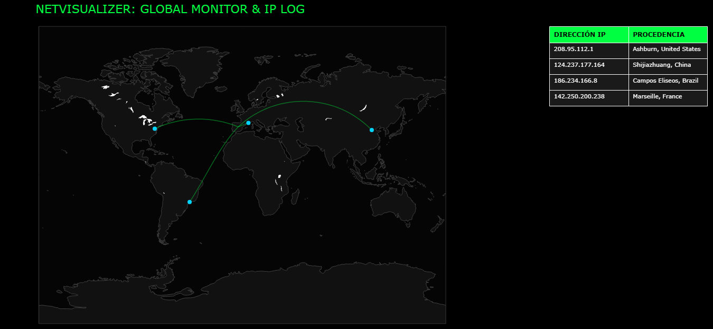

⚠️ Requisito de ejecución: Este script requiere
privilegios de **Administrador** para poder capturar paquetes de la
interfaz de red.
Resumen
Este script analiza el tráfico saliente de la tarjeta de red para identificar destinos externos, utiliza APIs de geolocalización para mapear estas conexiones en un dashboard interactivo global.
Instrucciones de uso
Una vez que el usuario descarga las
librerias pertinentes y ha navegado por distintas webs debe poner el
comando python main.py para que le aparezca el archivo
mapa_mundial.html con los datos IP de las webs visitadas.
Cómo probar (local)
-
Clona el repositorio e instala las librerías necesarias:
git clone https://github.com/siralex23/NetVisualizer.git cd NetVisualizer pip install scapy plotly requests pandas
- Abre una terminal con permisos de Administrador.
-
Ejecuta el script principal:
python main.py
Demo: Dashboard Unificado
Visualización Global y Registro de IPs

Reporte final generado tras la captura, mostrando el mapa de conexiones mundiales y la tabla de procedencia por IP.